Galería
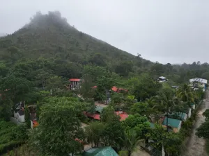
 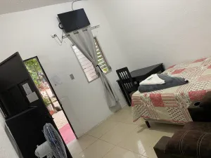
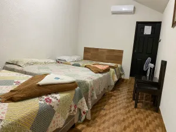
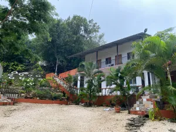
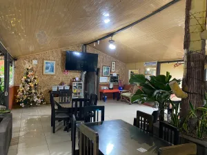
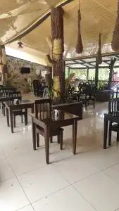
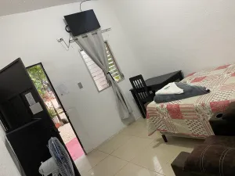
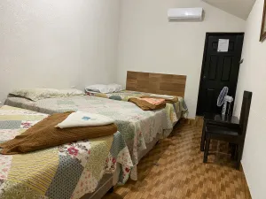
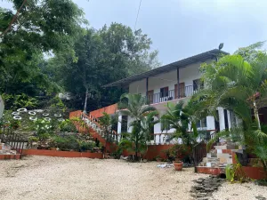
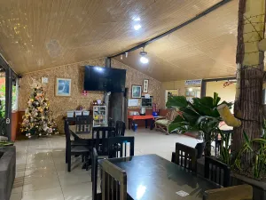
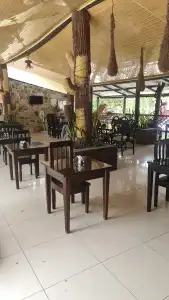
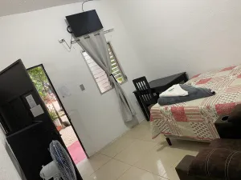
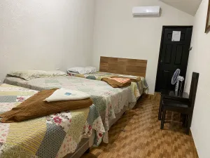
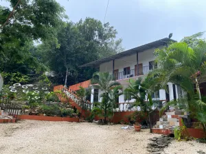
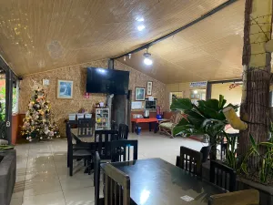
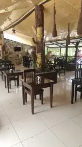
Bienvenido a Hotel y Restaurante Pino Grande, un refugio de tranquilidad ubicado en la hermosa región de Petén, Guatemala. Nuestro objetivo es ofrecerle a cada huésped una experiencia auténtica, combinando el confort de nuestras instalaciones con el entorno natural que nos rodea.
Ya sea que viaje por negocios, placer o en familia, encontrará en nuestras instalaciones todo lo necesario para relajarse, disfrutar y reconectarse. Desde nuestras habitaciones cómodas hasta las áreas sociales, estamos diseñados para su bienestar.
Fundado en 2013, Hotel y Restaurante Pino Grande ha sido un referente de hospitalidad en la región de Petén durante más de una década. Lo que comenzó como un sueño de ofrecer hospedaje de calidad se ha convertido en un destino confiable para viajeros nacionales e internacionales.
Ubicados estratégicamente en la Ruta Petén, km 385, nos encontramos en un entorno privilegiado para explorar la región. A lo largo de los años, hemos acumulado experiencia en hospitalidad y restauración, atendiendo a viajeros que buscan descansar en un ambiente amigable y seguro.
Nuestro compromiso es ofrecer servicio personalizado, instalaciones limpias y modernas, y una gastronomía que celebra los sabores locales. Además, brindamos atención para eventos especiales, grupos y viajeros exigentes que buscan una estadía cómoda y memorable.
En Hotel y Restaurante Pino Grande creemos que cada estadía es una oportunidad para crear recuerdos: desde un desayuno temprano antes de tu excursión, hasta una tarde de descanso en nuestras áreas verdes. Estamos aquí para hacer que cada momento cuente.
Porque creemos que los detalles marcan la diferencia, ofrecemos servicio a la habitación y opciones adaptadas para familias o grupos grandes.
Ver Menú
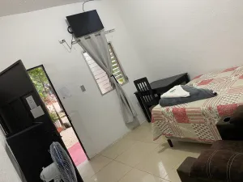
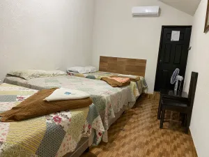
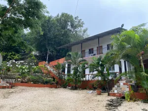
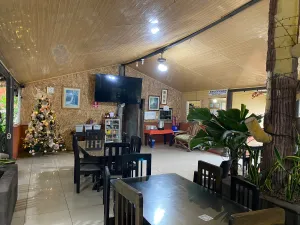
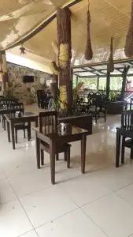
Dirección: Km 385, Ruta Petén, Poptún, Guatemala.
Teléfono / WhatsApp: +502 5804-3907
Facebook: Hotel y Restaurante Pino Grande (Long Pine)